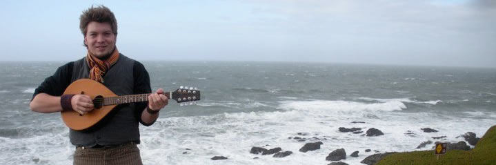

|
His biØgraphy
 Andreas Transø, is a storyteller, writer, and musician based out of the Ocooch Mountains of the Driftless Region in Southwest Wisconsin. Performing mostly traditional and contemporary Irish, English, Scottish and American folk music, he travels around learning and sharing stories, songs, and dance. When not on the road, Andreas volunteers with the Gays Mills Natural Foods Co-operative and the InHealth Community Wellness Clinic (Boscobel Free Clinic), which his family founded in 2007. He previously lived and worked at the Frog and Toad Land Trust, an off-the-grid organic farming and living co-operative in Crawford County, Wisconsin. His travels as a student took him to study Irish music, history, and culture at the University of Limerick's Irish World Music Centre in Limerick, Ireland, the Oideas Gael Gaelic Language School in County Donegal, Ireland and at St. Mary's College in London, England. He also studied world cultures, theatre, music, and history at the University of Wisconsin-Platteville and the UW-Milwaukee Celtic Studies Department. He is a bodhrán player with the International Peace Ambassador group The Call For Peace Drum and Dance Company and works with The Great Midwestern Educational Theater Company (hosts of acclaimed Frogwarts School of Witchcraft and Wizardry). When in Northern Ireland he worked for BINGBANGBONG, the ingenius instrument design and building workshop founded/run by Paul Marshall. His work there included building instruments for the internationally-acclaimed theatrical percussion ensemble STOMP!, schools, sound playgrounds, and civic art installations around the UK and Ireland.
|
The Buzz  News & Such
|